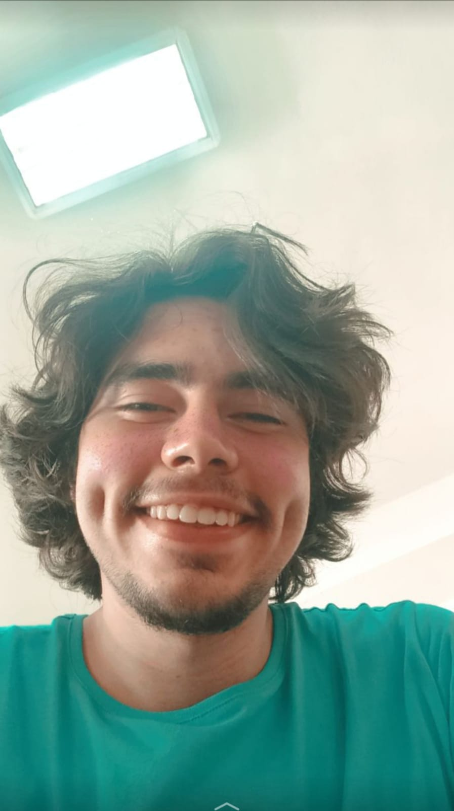

Adım Osman Yiğit Can , 09/01/2002 , Kırşehir-Merkez doğumluyum ; Konya Selçuk Üniversitesi Yönetim Bilişim Sistemleri bölümü 3. Sınıf öğrencisiyim
Hobilerimden bahsetmek istiyorum ;küçüklüğümden bu yana koyu bir Fenerbahçeliyim ve futbol oynamayı aynı zamanda izlemeyi çok severim
Aynı zamanda Kitap okumayı , okurken analiz yapmayı , hayat üzerine derin düşüncelere dalmayı :D severim , film izlemeyi ki özellikle bilim kurgu ve macera tarzı
filmlere bayılırım.
Kırşehir'de güzide bir dükkanımız var , küçüklüğümden beri kimi zaman oturmaya kimi zaman çalışmaya uğradığım şirin mi şirin bir dükkan ..
Sizlere biraz da lise ve sonrası için yapmış olduğum belli faaliyetleri anlatmak istiyorum 2017-18 yılları arasında Çayağzıspor klübünde amatör futbol oynadım
lise yıllarımın son dönemlerinde şehrimize gelen bir eğitim sonucu henüz 18 yaşındayken T-1 ve T-0 insansız Hava Aracı Ehliyetine sahip oldum .

Biliyorum benden çok sıkıldınız fakat sizlere kendi hayatımdan derlemiş olduğum belli tecrübelerden bahsetmek istiyorum çünkü içinizden benim gibi hayat yaşamış birisi çıkarsa ona bunları bahsetmemekten çok üzüntü ve derin bir acı duyarım. Birincisi nolursa olsun hedef ve amacınız olsun , kendinize ait bir vizyonunuz , isteğiniz sonu belli olmasa da adım atabileceğiniz bir yolunuz olsun , bu yolda giderken her şeyinizi kaybedebilir , üzülebilir gel zaman git zaman öfkelenebilirsiniz , bunlar hayatta olası şeylerdir bunu aklınızdan çıkarmayarak bu duyguları yaşayın ; sadece kalıcı olmasın En yakın arkadaşınızdan yılın kazığını sağlam bir şekilde de yemiş olabilirsiniz , nolursa olsun bir çok olumsuz ve negatif yönlü olan duygularınızı iyiye , odaklanmaya ve çalışmaya sevk edebilmelisiniz.